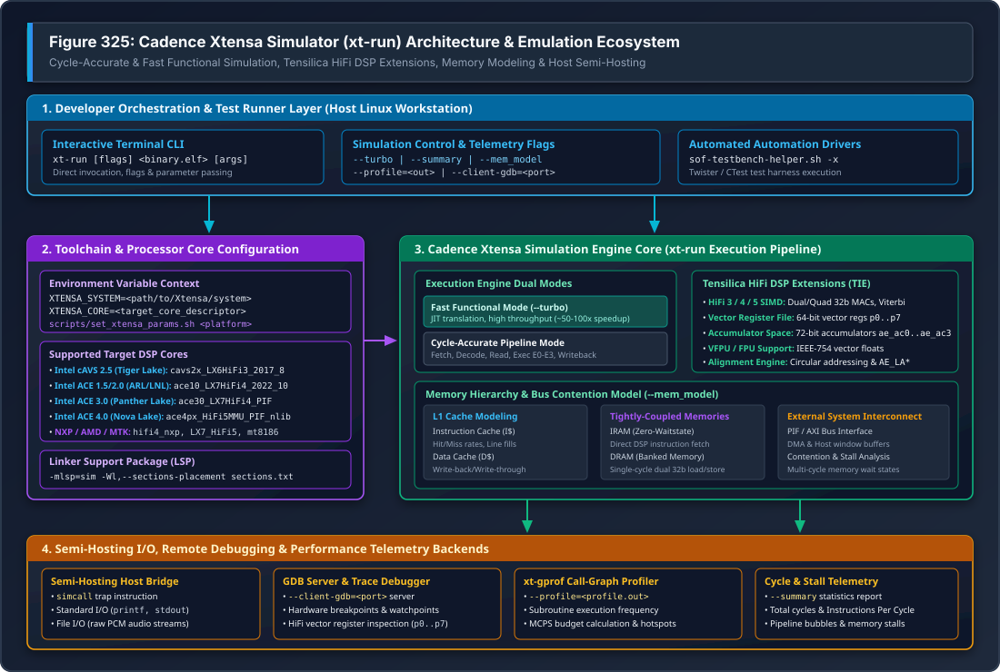
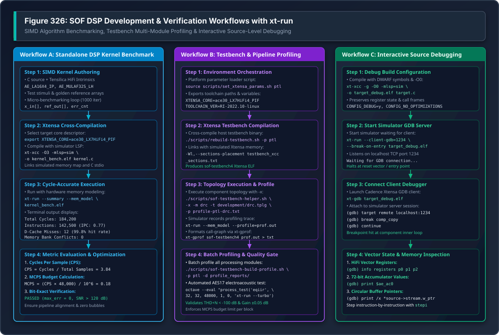

Xtensa Simulator (xt-run) Architecture & Verification Guide#
Sound Open Firmware (SOF) utilizes the proprietary Cadence Xtensa Simulator
(xt-run) as an instruction-accurate and cycle-accurate execution engine
for pre-silicon DSP algorithm verification, SIMD optimization, host audio
pipeline simulation, and automated unit testing across diverse Tensilica
HiFi architectures.
While host-native POSIX simulation (Unit Testing with Zephyr Ztest & Twister) allows rapid sub-second
test execution and QEMU (qemu_xtensa) provides functional execution of
generic kernel primitives, neither can model the micro-architectural nuances of
Tensilica HiFi DSP pipelines. The Cadence Xtensa Simulator bridges this critical
verification gap by executing target-compiled Xtensa ELF binaries with exact
hardware register sets, vector arithmetic pipelines, pipeline stall accounting,
cache hit/miss dynamics, and memory bus contention modeling.
—
Overview & Role in the SOF Verification Pyramid#
SOF employs a structured 5-tier verification pyramid to validate DSP firmware from isolated mathematical algorithms up to full system driver integration on physical silicon.
Tier Level |
Execution Target |
Scope & Focus |
Telemetry & Speed |
|---|---|---|---|
Tier 1: Unit Tests |
|
Isolated C algorithms, mocks, ring buffers, state machines. |
Milliseconds; functional logic only (no SIMD execution). |
Tier 2: Host Testbench |
Native Host ( |
Pipeline WAV-to-WAV streaming, multi-component DAG topologies. |
Seconds (10x–100x faster than real time). |
Tier 3: DSP Simulation |
Cadence xt-run & |
Cycle-accurate HiFi3/4/5 SIMD, cache modeling, MCPS budgets. |
Seconds to Minutes; bit-exact hardware validation. |
Tier 4: Hardware Bridges |
ESP32-P4 / Teensy 4.1 |
Real DAI buses (I2S, PDM, S/PDIF), clock provider/consumer sync. |
Minutes; physical silicon interface verification. |
Tier 5: Silicon DUTs |
Physical Target Hardware (cAVS & ACE Platforms) |
Mainline Linux kernel ALSA driver, IPC pumps, power D0ix/D3. |
Minutes to Hours; end-to-end production verification. |
Why xt-run is Essential in SOF Development#
Cycle-Accurate DSP Execution: Unlike generic emulators,
xt-runsimulates the exact execution pipeline of the target Tensilica core (such as the 5-stage or 7-stage pipeline in HiFi 3, HiFi 4, and HiFi 5). It accounts for register read-after-write (RAW) stalls, branch misprediction penalties, and multi-cycle arithmetic instruction delays.Proprietary Tensilica Instruction Extension (TIE) Simulation: SOF audio algorithms rely heavily on Tensilica HiFi SIMD intrinsics (e.g.
AE_LA16X4_IP,AE_MULAF32S_LH,AE_ROUND32F64SSYM, and VFPU vector floating-point instructions). These instructions cannot be executed natively on x86 host CPUs.xt-runprovides full bit-exact emulation of all TIE instructions, vector registers (p0–p7), and 72-bit accumulators (ae_ac0–ae_ac3).Million Cycles Per Second (MCPS) Budget Auditing: Audio processing components operating within real-time DSP pipelines have strict cycle budgets per period tick (typically 1 ms at 48 kHz, or 48 audio frames). By executing within
xt-runwith the--profileand--summaryoptions, developers calculate exact Million Cycles Per Second (MCPS) consumption before deploying code to physical development boards.Pre-Silicon Architecture Bringup: New silicon generations (such as Intel Panther Lake ACE 3.0 or Nova Lake HiFi 5) require functional firmware validation months before physical test wafers arrive from the fabrication facility.
xt-runallows the SOF team to compile and execute audio firmware against pre-release processor core descriptors.Hardware Memory Alignment & Bank Contention Detection: Tensilica DSP architectures enforce strict memory alignment rules. Loading a 64-bit vector from an unaligned address or attempting simultaneous dual 32-bit accesses to the same physical SRAM memory bank triggers hardware exceptions.
xt-runtraps these alignment violations and memory bank collisions during simulation.
—
Xtensa Simulator System Architecture#
The Cadence Xtensa Simulator operates as a modular simulation platform integrating core execution engines, processor configuration registries, host semi-hosting interfaces, and performance profiling tools.
{kind=link}

Figure 329 Figure 325: Cadence Xtensa Simulator (xt-run) Architecture & Emulation Ecosystem#
Architectural Layers Breakdown#
The simulation framework shown in Figure 329 is organized into four operational layers:
Developer Orchestration & Test Runner Layer (Host Linux Workstation): The user space execution environment. Developers invoke
xt-rundirectly via the command-line interface or through automated orchestration scripts such asscripts/sof-testbench-helper.sh(for pipeline audio simulations) and Zephyr’s Twister test runner (for automated unit test execution).Toolchain & Processor Core Configuration: The Xtensa toolchain relies on an external configuration registry defined by
XTENSA_SYSTEM. TheXTENSA_COREenvironment variable selects the hardware-specific core configuration file, defining the instruction set, pipeline depth, cache geometry, memory map, and coprocessor availability. Linker Support Packages (LSP), such as-mlsp=sim, provide the memory map and startup vectors for simulator execution.Cadence Xtensa Simulation Engine Core: The central execution engine supporting two distinct operational modes:
Fast Functional Mode (``–turbo``): Employs dynamic binary translation (JIT) to achieve 50x to 100x execution speedups. Ideal for functional regression testing and CI test gates where cycle timing is not required.
Cycle-Accurate Pipeline Mode: Models instruction fetch, instruction decode, operand read, multi-stage execution (E0 through E3), and writeback. Simulates Tensilica HiFi3/4/5 vector registers (
p0–p7), 72-bit accumulators, and VFPU vector floating-point coprocessors.Memory Hierarchy Model (``–mem_model``): Simulates L1 instruction and data caches (cache hits, misses, line fills, and writebacks), zero-waitstate Tightly-Coupled Memories (IRAM and DRAM), and external Processor Interface (PIF) / AXI bus latency and bank conflicts.
Semi-Hosting I/O, Debugging & Telemetry Backends: Bridges simulated processor operations to host operating system facilities:
Semi-Hosting Host Bridge: The Xtensa
simcalltrap instruction intercepts system calls, routing standard C library operations (printf,fopen,fread,fwrite) directly to the host filesystem and terminal.GDB Server (``–client-gdb``): Exposes a TCP socket enabling remote source-level debugging with
xt-gdb.Call-Graph Profiler (``xt-gprof``): Processes binary profiling logs (
profile.out) generated by--profileto produce detailed call graphs and subroutine execution statistics.Cycle & Stall Telemetry (``–summary``): Emits a concise execution summary detailing total cycles, instructions executed, instructions per cycle (IPC), and pipeline stall cycles.
—
Environment Configuration & Target Processor Core Matrix#
Running simulations with xt-run requires setting up the Cadence toolchain
paths and selecting the target core descriptor matching the target hardware
platform.
Core Environment Variables#
Environment Variable |
Example Path / Value |
Purpose & Role |
|---|---|---|
|
|
Root installation directory containing Cadence tool releases. |
|
|
Path to the processor core configuration registry. |
|
|
Specific processor core descriptor matching target hardware. |
|
|
Directory containing |
|
|
Target core system build tree containing include files and LSPs. |
SOF Target Platform & Processor Core Matrix#
SOF supports multiple hardware architectures across Intel, NXP, AMD, and MediaTek. The table below lists the mapping between SOF platform targets, Xtensa core descriptors, toolchain versions, and DSP capabilities:
SOF Platform |
Hardware Platform |
Xtensa Core Descriptor |
Toolchain Version |
DSP Architecture |
|---|---|---|---|---|
|
Tiger Lake |
|
|
LX6 + HiFi 3 SIMD |
|
Tiger Lake-H |
|
|
LX6 + HiFi 3 SIMD |
|
Meteor Lake / Arrow Lake |
|
|
LX7 + HiFi 4 SIMD + VFPU |
|
Lunar Lake |
|
|
LX7 + HiFi 4 SIMD |
|
Panther Lake |
|
|
LX7 + HiFi 4 SIMD + PIF |
|
Nova Lake |
|
|
LX8 + HiFi 5 SIMD + MMU |
|
NXP i.MX 8 |
|
|
LX6 + HiFi 4 SIMD |
|
NXP i.MX 8M |
|
|
LX6 + HiFi 4 SIMD |
|
NXP 8ULP |
|
|
LX7 + HiFi 4 SIMD |
|
Renoir |
|
|
HiFi 5 SIMD |
|
Rembrandt |
|
|
LX7 + HiFi 5 SIMD |
|
MediaTek |
|
|
HiFi 5 (7-stage pipeline) |
|
MediaTek |
|
|
HiFi 4 SIMD |
Automating Setup with set_xtensa_params.sh#
The SOF repository provides scripts/set_xtensa_params.sh to automate setting
these variables based on the target platform argument:
# Source environment parameters for Intel Panther Lake (PTL)
source scripts/set_xtensa_params.sh ptl
# Verify exported core and toolchain settings
echo "Core: $XTENSA_CORE"
echo "Version: $TOOLCHAIN_VER"
echo "Compiler: $SOF_CC_BASE"
Linker Support Packages (LSP) & Section Placement#
Cadence cross-compilers require a Linker Support Package (LSP) to resolve physical memory layouts, vector addresses, and CRT0 startup initialization:
Simulator LSP (``-mlsp=sim``): Configures a generic flat memory map suitable for execution inside
xt-run, enabling semi-hosting traps forprintfand file I/O.Hardware Target LSPs: Tailored for physical silicon memory windows, SRAM banks, and bootloader ROM entry points. Hardware LSPs cannot run inside
xt-runwithout platform emulation models.Custom Section Placement: SOF uses custom section placement scripts (
testbench_xcc_sections.txt) to organize large audio buffers, heap pools, and BSS memory during testbench cross-compilation without colliding with simulator reset vectors:export LDFLAGS="-mlsp=sim -Wl,--sections-placement tools/testbench/testbench_xcc_sections.txt"
—
Simulator CLI Options & Telemetry Control#
The xt-run executable provides extensive command-line flags controlling
execution modes, memory modeling, profiling, and debugging hooks.
Command-Line Options Reference#
CLI Option Flag |
Functional Description & Usage |
|---|---|
|
Fast Functional Execution: Enables JIT dynamic translation, providing 50x to 100x acceleration. Disables cycle counting; returns target exit status. Ideal for automated CI test suites. |
|
Execution Statistics Report: Prints a post-execution telemetry report detailing total elapsed cycles, instructions executed, Instructions Per Cycle (IPC), and pipeline stalls. |
|
Memory & Cache Simulation: Enables detailed simulation of L1 I-cache, L1 D-cache, wait states, and memory bank access conflicts. |
|
Execution Profiling: Generates a binary execution profile compatible
with |
|
Remote GDB Server: Halts the simulator and listens on the specified
TCP port for an incoming connection from |
|
Halt on Reset Vector: Halts execution at the target entry point when
running with |
|
Exit Code Propagation: Propagates the target binary’s |
|
Instruction Disassembly Trace: Dumps executed instructions and register modifications to stderr. |
|
Cycle Timestamped Trace: Prepend cycle timestamps to the instruction trace output. |
|
Core Override: Explicitly overrides the |
Interpreting the –summary Telemetry Report#
When invoked with --summary, xt-run outputs detailed micro-architectural
telemetry upon target termination:
======================================================================
Simulation Summary for Core: ace30_LX7HiFi4_PIF
======================================================================
Total Cycles: 184,200
Instructions Executed: 142,500
Instructions Per Cycle (IPC): 0.7736
Pipeline Bubbles / Stalls: 41,700 (22.64%)
- RAW Register Stalls: 18,400 (9.99%)
- Memory Wait States: 14,200 (7.71%)
- Branch Penalty Cycles: 9,100 (4.94%)
L1 Instruction Cache:
- Accesses: 142,500
- Misses: 18 (99.98% Hit Rate)
L1 Data Cache:
- Accesses: 68,400
- Misses: 12 (99.98% Hit Rate)
Memory Bank Contention: 0 conflicts
Target Exit Status: 0 (SUCCESS)
======================================================================
—
SOF Verification Workflows#
SOF developers utilize xt-run across three primary verification workflows:
standalone DSP kernel benchmarking, host audio pipeline testbench profiling, and
interactive source-level debugging.
{kind=link}

Figure 330 Figure 326: SOF DSP Development & Verification Workflows with xt-run#
Workflow A: Standalone SIMD Algorithm Benchmarking#
Workflow A enables rapid prototyping, SIMD vectorization, and cycle-count optimization of isolated DSP algorithms before integration into SOF components:
Kernel Authoring: Author the algorithm using Tensilica HiFi C intrinsics. The example below benchmarks a 32-bit audio volume scaling loop using HiFi 4 vector intrinsics:
#include <stdio.h> #include <stdint.h> #include <xtensa/tie/xt_hifi4.h> #define FRAMES 48 #define CHANNELS 2 #define ITERATIONS 1000 int32_t audio_in[FRAMES * CHANNELS] __attribute__((aligned(8))); int32_t audio_out[FRAMES * CHANNELS] __attribute__((aligned(8))); void apply_gain_simd(const int32_t *src, int32_t *dst, int32_t gain, int samples) { ae_f32x2 v_gain = AE_MOVDA32(gain); const ae_f32x2 *p_src = (const ae_f32x2 *)src; ae_f32x2 *p_dst = (ae_f32x2 *)dst; int i; for (i = 0; i < samples / 2; i++) { ae_f32x2 sample = AE_L32X2_I(p_src, 0); p_src++; ae_f32x2 scaled = AE_MULFP32X2RAS(sample, v_gain); AE_S32X2_I(scaled, p_dst, 0); p_dst++; } } int main(void) { int32_t gain_factor = 0x40000000; // 0.5 (-6 dB) in Q1.31 int iter; // Initialize test stimuli for (iter = 0; iter < FRAMES * CHANNELS; iter++) { audio_in[iter] = 0x20000000; } // Benchmark execution loop for (iter = 0; iter < ITERATIONS; iter++) { apply_gain_simd(audio_in, audio_out, gain_factor, FRAMES * CHANNELS); } printf("Benchmark completed: %d iterations\n", ITERATIONS); return 0; }
Cross-Compilation with xt-xcc / xt-clang: Compile the source targeting the desired Xtensa core using the
-mlsp=simsimulator LSP and-O3optimization:export XTENSA_CORE=ace30_LX7HiFi4_PIF xt-xcc -O3 -mlsp=sim -o gain_bench.elf standalone_gain_benchmark.c
Execution & Cycle Extraction: Execute the compiled binary with cycle accounting and memory modeling:
xt-run --summary --mem_model gain_bench.elf
Telemetry Analysis & MCPS Calculation: Extract total cycles from the summary report to determine the Cycles Per Sample (CPS) and Million Cycles Per Second (MCPS):
\[\text{CPS} = \frac{\text{Total Cycles} - \text{Overhead Cycles}}{\text{ITERATIONS} \times \text{FRAMES} \times \text{CHANNELS}}\]\[\text{MCPS} = \frac{\text{CPS} \times 48{,}000}{10^6}\]
Workflow B: Host Audio Pipeline Testbench Profiling (Topology 2.0)#
Workflow B couples the SOF Host Audio Pipeline Testbench (Testbench Host Audio Pipeline Simulation)
with xt-run to simulate complete multi-component topologies and generate
hierarchical profiling reports:
Build Testbench for Xtensa Architecture: Cross-compile
sof-testbench4for the target hardware platform:# Configure toolchain environment for Panther Lake source scripts/set_xtensa_params.sh ptl # Build testbench binary linked with simulator LSP ./scripts/rebuild-testbench.sh -p ptl
This produces the Xtensa ELF binary at
tools/testbench/build_xt_testbench/sof-testbench4.Execute Single Component Profile via Helper Script: Invoke
scripts/sof-testbench-helper.shwith the-xflag to execute insidext-runand generate call-graph profile outputs:./scripts/sof-testbench-helper.sh -x \ -m drc \ -t tools/topology/topology2/development/sof-hda-benchmark-drc32.tplg \ -p profile-ptl-drc.txt
Under the hood, the helper script sources
xtrun_env.sh, launches the simulator with profiling enabled:$XTENSA_PATH/xt-run --mem_model --profile=profile.out \ tools/testbench/build_xt_testbench/sof-testbench4 \ -t sof-hda-benchmark-drc32.tplg -p 1,2 -i in.raw -o out.raw
It then processes the profile trace via
xt-gprof:$XTENSA_PATH/xt-gprof tools/testbench/build_xt_testbench/sof-testbench4 \ profile.out > profile-ptl-drc.txt
Automated Batch Profiling Across All Modules: Execute
scripts/sof-testbench-build-profile.shto cross-compile and benchmark all standard SOF processing modules across 24-bit and 32-bit formats:export SOF_WORKSPACE=~/work/sof-ptl ./scripts/sof-testbench-build-profile.sh -p ptl -d profile_reports/
The generated text reports quantify execution time per function, identifying hotspots in circular buffer management, coefficient interpolation, and SIMD inner loops.
Objective Electroacoustic AES17 Quality Gate: Execute GNU Octave electroacoustic test scripts with
xt-run --turboto validate Total Harmonic Distortion plus Noise (THD+N) and gain accuracy:octave --eval "process_test('eqiir', 32, 32, 48000, 1, 0, 'xt-run --turbo');"
Workflow C: Interactive Source-Level DSP Debugging#
Workflow C connects Cadence’s xt-gdb debugger to xt-run over a local TCP
socket, allowing developers to step through vectorized assembly, inspect vector
registers, and debug memory corruption:
Compile with Debug Symbols: Build the target application or testbench with debug flags (
-g -O0):xt-xcc -g -O0 -mlsp=sim -o debug_target.elf debug_target.c
Start Simulator GDB Server: Launch
xt-runwith the--client-gdband--break-on-entryflags:xt-run --client-gdb=1234 --break-on-entry debug_target.elf
The simulator initializes the virtual processor, loads the ELF into simulated memory, halts at the reset vector, and waits on TCP port 1234.
Connect xt-gdb Client: In a separate terminal, launch
xt-gdband attach to the simulator session:xt-gdb debug_target.elf (gdb) target remote localhost:1234 (gdb) break comp_copy (gdb) continue
Inspect Tensilica HiFi Hardware State: Once halted at a breakpoint, inspect core and vector registers:
(gdb) info registers p0 p1 p2 p0 0x0000000100000002 {0x1, 0x2} p1 0x0000000300000004 {0x3, 0x4} p2 0x0000000500000006 {0x5, 0x6} (gdb) print $ae_ac0 $1 = 0x000000000000123456 (gdb) print /x *source->stream.w_ptr $2 = 0x20004000 (gdb) stepi 0x00000428 in apply_gain_simd () at standalone_gain_benchmark.c:26 26 ae_f32x2 scaled = AE_MULFP32X2RAS(sample, v_gain);
—
MCPS Budgeting & Memory Access Profiling#
Understanding and optimizing DSP compute consumption requires transforming raw simulator cycle telemetry into architectural Million Cycles Per Second (MCPS) budgets.
Mathematical Formulations#
For an audio processing module operating on blocks of \(N_{\text{frames}}\) audio frames at a sampling frequency of \(f_s\) Hz with \(N_{\text{ch}}\) channels:
Cycles Per Sample (CPS):
\[\text{CPS} = \frac{\text{Cycles}_{\text{period}}}{N_{\text{frames}} \times N_{\text{ch}}}\]Million Cycles Per Second (MCPS):
\[\text{MCPS} = \frac{\text{Cycles}_{\text{period}} \times \left(\frac{f_s}{N_{\text{frames}}}\right)}{10^6}\]Peak DSP Load Factor: For a DSP core clocked at \(F_{\text{clk}}\) MHz (e.g. 400 MHz on Intel CAVS/ACE):
\[\text{Load} = \left(\frac{\text{MCPS}}{F_{\text{clk}}}\right) \times 100\%\]
Typical SOF Processing Module MCPS Budgets#
The table below outlines target MCPS budgets for standard SOF processing modules operating at 48 kHz stereo (2-channel, 1 ms period tick):
Processing Module |
Target Budget |
Typical Measured |
Primary Optimization Bottleneck |
|---|---|---|---|
Volume / Gain |
\(< 0.2\) MCPS |
\(0.08\) MCPS |
64-bit vector load/store alignment. |
Mixin / Mixout |
\(< 0.2\) MCPS |
\(0.12\) MCPS |
Memory bus read bandwidth across streams. |
Parametric EQ (IIR) |
\(< 1.0\) MCPS |
\(0.45\) MCPS |
Second-order Direct Form II Biquad feedback. |
Parametric EQ (FIR) |
\(< 2.5\) MCPS |
\(1.20\) MCPS |
Vector multiply-accumulate (MAC) depth. |
Dynamic Range (DRC) |
\(< 3.0\) MCPS |
\(1.65\) MCPS |
Peak detector envelope log/exp calculations. |
SRC (44.1k to 48k) |
\(< 5.0\) MCPS |
\(2.80\) MCPS |
Polyphase FIR filter phase interpolation. |
Beamformer (TDFB) |
\(< 4.0\) MCPS |
\(2.10\) MCPS |
Multi-channel microphone array FIR summing. |
RTNR Noise Reduction |
\(< 15.0\) MCPS |
\(8.50\) MCPS |
STFT time-frequency transform & Wiener gain. |
Cache & Memory Contention Analysis#
Running xt-run with --mem_model simulates physical memory bank
conflicts. On Tensilica architectures, Tightly-Coupled Data RAM (DRAM) is
divided into interleaved memory banks (typically two 32-bit banks). When a SIMD
instruction attempts to load two 32-bit values that reside in the same bank
during the same clock cycle, the core introduces a hardware stall cycle.
To eliminate memory bank stalls:
Align all audio buffers to 8-byte boundaries using
__attribute__((aligned(8))).Structure interleaved stereo samples such that Left channel samples occupy even words (Bank 0) and Right channel samples occupy odd words (Bank 1).
Use aligned vector load intrinsics (
AE_L32X2_IorAE_LA16X4_IP) rather than unaligned pointer dereferences.
—
Systematic Troubleshooting & Diagnostics#
When developing or simulating with xt-run, developers may encounter
exceptions, licensing errors, or memory alignment traps. The table below
provides actionable root-cause diagnostics and remediation procedures:
Error Symptom |
Underlying Root Cause |
Remediation Procedure |
|---|---|---|
|
Unaligned memory access. A 32-bit or 64-bit vector load/store instruction was executed on a non-aligned memory address. |
Enforce 8-byte alignment on all buffer allocations with
|
|
The requested |
Verify |
|
Cadence toolchain license daemon is unreachable, license expired, or
|
Verify network connectivity to the lab license server. Check license
environment variables: |
|
Executable binary size exceeds the simulated memory boundary allocated
by the default simulator LSP ( |
Link with custom section placement script: |
|
The binary terminated via |
Always pass |
|
Simulated semi-hosting attempted to write to an unopened file or exceeded host OS open file limits. |
Check file path existence in simulated code. Verify that file pointers
returned by |